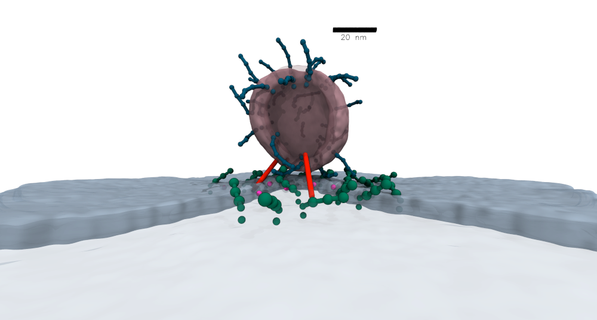

|
Computational Scientist
Research Director at Neurorium |
| Bio |
|
I am a computational scientist with a specialization in the modeling and simulation of biological processes at the mesoscopic scale.
My research plays a key role in quantitative integrative biology, bridging physics-based predictions with biological observables.
Alongside this, I'm actively engaged in the development of deep learning techniques, which enable the automated analysis of microscopy and tomography imaging data. For more details and examples, please visit the Research section. I am also a co-founder of the science-based startup, Neurorium, dedicated to realizing the computational potential of living neurons. Born in Tehran, Iran, I attended Sharif University of Technology, where I studied mechanical engineering, and later pursued a PhD in computational nanotechnology. During this phase, my contributions spanned various research areas, ranging from nonlinear mechanical analysis of nanostructures to molecular simulations of nano-confined fluids. The Publications section enumerates my peer-reviewed works across these multifaceted disciplines. In my free time, I enjoy swimming, bouldering, and reading. I am also a photography enthusiast, and you can check a selection of my works at my 500px portfolio. |
| Research |
| Computational model of synaptic vesicle docking |
|
I joined forces with researchers from Max Delbrück Center and Charité — Universitätsmedizin Berlin,
to look at the docking and fusion of synaptic vesicles in mouse hippocampal neurons. Extremely detailed insights, derived from meticulous cryo-ET experiments and tomographic data analysis, effectively streamlined the construction of a computational model of the process. My mesoscopic simulations unveiled the kinetics of the process in clear detail, highlighted the role of membrane-curving particles mimicking synaptotagmin C2B domain, and helped test a hypothesis on how the concentration of these particles can adversely affect the docking kinetics. Read the rest of the details, including how we developed a Markov state model of the docking and fusion process, in the paper published in Nature Communications. You can also check the press release from Charité — Universitätsmedizin Berlin (in German). |
|
 Mesoscopic model of the synaptic vesicle docking. © Mohsen Sadeghi. |
| Mesoscopic model of human cytomegalovirus |
|
In a recent collaboration with researchers from FMP Berlin and Charité Berlin, we built a comprehensive model of the human cytomegalovirus (HCMV) virion.
We used information from quantitative proteomics as well as cross-linking mass spectrometry to model a wide range of viral and host proteins inside the virion.
Models of glycoproteins (shown in red in the image) as well as the capsid (blue-green particles in the image) are built from cryoEM and/or AlphaFold2 predictions. Large-scale simulations using this model lead to predictions about the role of pp150 protein in organizing the tegument proteins into a three-layer structure. Further details of the model and simulations can be found in our Nature Microbiology paper. You can also read more in the press release from FMP Berlin (in German). |
 Sectioned view of the mesoscopic model of the HCMV. © Mohsen Sadeghi. |
| Particle-based modeling of biomembranes |
|
For a while, my main research focus was on modeling membrane-involved biological processes.
As my main simulation tool, I developed a highly coarse-grained model of bilayer membranes. This model mimics the mechanics of the membrane via bonded interactions, with a force field optimized against the energy density predicted by the curvature elasticity of the membrane. I further complemented this membrane model with a hydrodynamic coupling scheme, as detailed in my 2020 Nature Communications paper. You can see the model in action by checking this Simularium visualization (by Allen Institute) of my simulation of a nanoparticle being wrapped by the membrane. Finally, I implemented "force field masking" to incorporate membrane-bending peripheral proteins in the model (blue particles in the movie). Predictions about the interplay between flexible peripheral proteins and the dynamic membrane are the basis of several publications, including this Journal of Physical Chemistry Letters paper. |
|
Aggregation of membrane-bending peripheral proteins on the membrane due to implicit membrane-mediated interactions. © Mohsen Sadeghi. |
 Endocytosis of a spherical nanoparticle: nanoparticle is being wrapped by the fluid membrane as result of surface adhesion. © Mohsen Sadeghi. |
| Deep-SXT |
|
In a collaborative research between Freie Universität Berlin and Helmholtz-Zentrum Berlin, we looked at tomograms of eukaryotic cells with nanometer-scale resolutions. These tomograms are obtained through soft x-ray imaging facilitated by a synchrotron light source (cryo-soft x-ray tomography). I developed a software for semi-supervised deep learning-based segmentation and 3D reconstruction of these tomograms, based on few manual labels provided by experts. My software which is developed using TensorFlow, plus the trained network weights, are freely available (with an MIT license). You can download the software from the github repository github.com/noegroup/deep_sxt and follow instructions for setting up your local pipeline. |
 3D reconstruction of a cryo-soft x-ray tomogram using semi-supervised deep learning. © Mohsen Sadeghi. |
| In-Browser Molecular Dynamics (IBMD) |
|
This is a hobby project of mine from 2014. I implemented a JavaScript-based molecular dynamics code that runs in your browser and has a graphical output of the trajectory
as well as numerical and plot outputs of thermodynamic properties such as pressure. All outputs are in sync and reflect the current state of the simulation. In some cases,
the simulation can be tweaked by changing the setpoint temperature or pressure, and particles can be added or removed from the simulation box by simply clicking on it. Check it out here: In-Browser Molecular Dynamics (IBMD) . |
| Publications |
| My Google Scholar profile |
| Journal articles |
|
| Books & Chapters |
|
| Contact |
If you:
Feel free to send me an email to any of these addresses: sadeghi [at] zib.de mohsen.sadeghi [at] fu-berlin.de or find me on LinkedIn. |